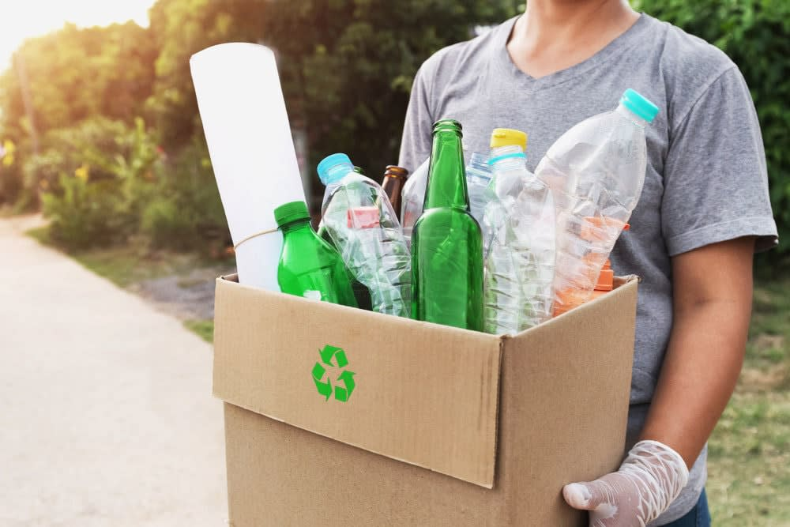
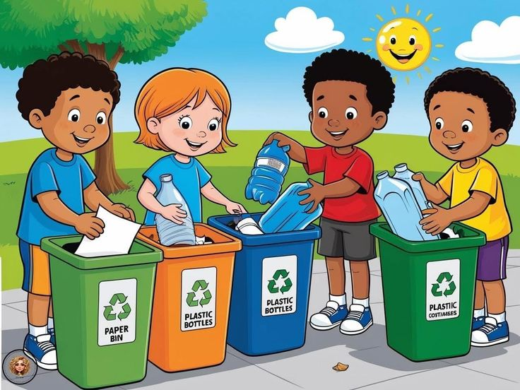

Bersama kita wujudkan lingkungan bersih dan berkelanjutan 🌍
Gabung Sekarang
Pelajari bagaimana Bank Sampah mengubah sampah jadi peluang ekonomi dan solusi lingkungan.

Pelatihan dan workshop untuk masyarakat tentang cara mengelola sampah.

Layanan penjemputan sampah terjadwal langsung ke rumah anggota.

Layanan penjemputan sampah terjadwal langsung ke rumah anggota.
Anggota Aktif
Sampah Daur Ulang
Pohon Diselamatkan
"Sejak ikut Bank Sampah, lingkungan jadi lebih bersih dan saya dapat manfaat nyata!"
- Ibu Sari, Bogor